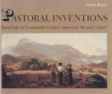

<body bgcolor="#FFFFFF" text="#000000" link="#0000FF" vlink="#CC0000" alink="#CC0000"><center><hr width="350" size="1" align="center" noshade>A new interpretation of American pastoral landscapes and depictions of rural life<hr width="350" size="1" align="center" noshade><p><a href="https://cdcshoppingcart.uchicago.edu/Cart/ChicagoBook.aspx?ISBN=9780877225805&&PRESS=temple" target="_top">Buy this book!</a> | <a href="https://cdcshoppingcart.uchicago.edu/Cart/Cart.aspx?PRESS=temple" target="_top">View Cart</a> | <a href="https://cdcshoppingcart.uchicago.edu/Cart/Cart.aspx?PRESS=temple" target="_top">Check Out</a></p><p></p></center><!--none//--><h1>Pastoral Inventions</h1>
<H2>Rural Life in Nineteenth-Century American Art and Culture</H2>
<h3>Sarah Burns</h3>
<P>cloth 0-87722-580-X $39.95, Mar 89, <FONT COLOR=#990033>Out of Print</FONT>
<BR> 392 pp
9x7.5
157&nbsp;halftones
</P><h3 align="center"><P><font color="#996633">Philadelphia Book Clinic Certificate of Award,
1990</font></P>
</H3>
<BLOCKQUOTE><I>"This is a really wonderful book. It is tremendously well researched, beautifully written, and presents material that has, to my knowledge, never been studied and analyzed before. Dr. Burns’s interdisciplinary approach, allying art history with both political and cultural developments, and especially with contemporary literature is as fascinating as it is unique. .A marvelous study."</I>
<br>&#151<b>William H. Gerdts</b>, CUNY<I></I></BLOCKQUOTE>
<p>In the nineteenth century, the theme of American country life in art and literature permeated the culture at all levels. The noble yeoman, the beauty and order of the farm, and the simple dignity of agrarian labor were cherished icons of national character among increasingly urbanized and industrialized Americans. In <I>Pastoral Inventions</I>, Sarah Burns proposes a new interpretation of American pastoral landscapes and depictions of rural life. Challenging earlier views of the meaning of agrarian themes, her vivid portrayal of nineteenth-century American art, culture, and society argues that these pastoral images, which bore little resemblance to the reality of rural life, performed an important but little-recognized role in support of urban, capitalist, and middle-class cultural dominance in American society.
<p>Focusing on the period from 1830 to 1900, Burns examines contemporary literature, theater, criticism, sermons, travelers’ accounts, autobiography, and social commentary to evaluate and "decode" the art of William Sidney Mount, Eastman Johnson, Winslow Homer, Currier and Ives, and others of lesser fame. At first reflecting a nostalgia for the past as well as an indictment of the evils of city life, pastoral images at mid-century implicitly reinforced Northern ideology, while images of the noble yeoman evolved into humorous portrayals of American farmers as bumpkins and peasants in support of the intellectual and cultural advantages of urban centers. Later in the century, nostalgic images of old homesteads and country children expressed the cultural anxieties of a rapidly changing society.
<p>With 157 illustrations, <I>Pastoral Inventions</I> demonstrates the important role played by American pictorial art in creating and perpetuating visual equivalents to ideas and beliefs about rural life that even today remain deeply embedded in American culture.
<BR>&nbsp;<H2>About the Author(s)</H2>
<P><b>Sarah Burns</b> is Associate Professor in the School of Fine Arts at Indiana University.</P>
<BR><H2>Subject Categories</H2>
<p><A HREF="/tempress/general.html" TARGET="_top">General Interest</a>
<BR><A HREF="/tempress/art.html" TARGET="_top">Art and Photography</a>
</p>
<BR><h2 class="inpageheading">In the series</H2>
<P><I><a href="http://www.temple.edu/tempress/am_civ.html" onMouseOver="window.status='Click for other books in this series!'; return true;" onMouseOut="window.status=''; return true;" target="_top">American Civilization</a></i>, edited by Allen F. Davis.
</p><p>The focus of <i>American Civilization</i>, edited by Allen F. Davis, is American cultural history. In keeping with the interdisciplinary work in this field, which characteristically brings together art history, literary history and theory, and material culture, the titles in this series cover diverse aspects of American experience&#151from attitudes toward death to twentieth-century design innovations to images of country life in art and letters to trade unions' reliance on religious discourse. The series has been a pioneer in presenting work that uses photographs as historical documents and from its inception has been firmly committed to women's studies. As the first university press series in the field, <i>American Civilization</i> provided the inspiration and the standard for much of the interdisciplinary work developing in the contemporary academy.</p>
<p align="center"><a href="https://cdcshoppingcart.uchicago.edu/Cart/ChicagoBook.aspx?ISBN=9780877225805&&PRESS=temple" target="_top">Buy this book!</a> | <a href="https://cdcshoppingcart.uchicago.edu/Cart/Cart.aspx?PRESS=temple" target="_top">View Cart</a> | <a href="https://cdcshoppingcart.uchicago.edu/Cart/Cart.aspx?PRESS=temple" target="_top">Check Out</a></p><p><font face="Arial" size="1"><a href="copyright.html" onMouseOver="window.status='Web Copyright Policy';return true;" onMouseOut="window.status=''" title="Web Copyright Policy">&copy;</a> 2015 <a href="http://www.temple.edu" target="new" onMouseOver="window.status='Link to Temple University home page';return true;" onMouseOut="window.status=''" title="Link to Temple University home page">Temple University</a>. All Rights Reserved. http://www.temple.edu/tempress/titles/589_reg.html</font></p>